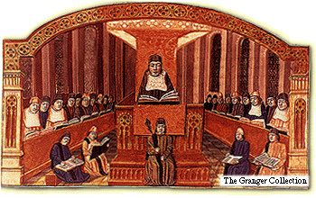

|
Last updated December 31, 1199 Congratulations! Your interest in the University of Paris proves that you recognize the value of the premier educational experience offered by this world-class institution. It is our pleasure to introduce you to the University of Paris.  Our instructors, called masters, have come from all over Europe. They are independent scholars licensed by the chancellor, a Church official who supervises the school. Many of our masters are famous throughout Europe. The University of Paris is situated in Paris’s Latin Quarter on the Left Bank of the River Seine, across from the Ile de la Cité. The University consists of many small private buildings and halls rented by our masters, who also live there. The University of Paris offers degrees in the arts and in theology, the study of the Bible and Church doctrine. The schools of theology at the University of Paris are deservedly famous. |